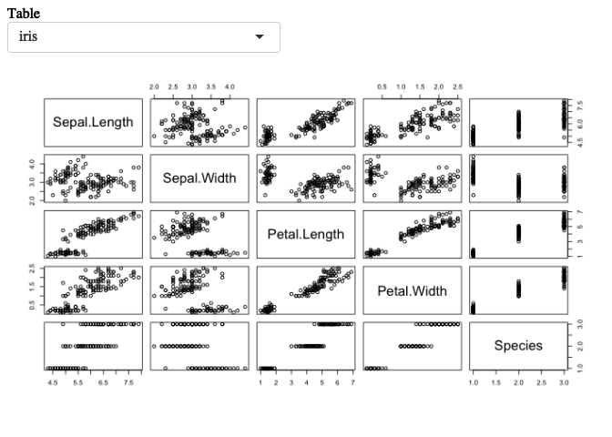

Optimizing Shiny Code
Optimizing R code
// TODO
Caching elements
What’s caching?
Caching is the process of storing resources intensive results so that when they are needed again, your programm can reuse the result again without having to redo it another time.
Let’s imagine that you know that you’ll need to use a phone number many time in the day, and for the purpose of this thought experiment you’re completly unable to remember it.
What are you going to do?
There are two solutions here: either every time you need it you look in the phone book or in your phone contact list, making it so that it takes a couple of seconds every time, or you use a post-it that you put on your computer screen with the number of it, so that you have direct access to it when you need it.
It takes a couple of seconds the first time you look for the number, but it’s almost instantaneous the next times you need it.
This is what caching do: keep the result of computation so when they are needed in the very same context, they are quickly accessible.
The downside being that you only have limited space on your screen: when your screen is covered by sticky notes, you can’t store any more notes.
In the context of an interactive application in a framework like Shiny, it makes much sense to cache data structures: users tend to repeat what they do, or go back and forth between parameters.
For example, if you have a graph that take 2 seconds to render (which is quite common in Shiny), you don’t want these 2 seconds to be repeated over and over again when users switch from one parameter to another and back to the first, as the two graphs will be the same for the same parameter.
Same goes for queries to a database: if a query is done with the same parameters, and you know that they will return the same result, there is no need to ask the database—ask the cache to retrieve the data.
Using caching in R
At least two packages in R implement caching of functions (also called memoization): {memoize}, and {memoise}.
They both more or less work the same way: you’ll call a memoization function on another function, and cache is created for this function.
Then everytime you call this function again with the same parameters, the cache is returned instead of computing again.
Here is a simple example with {memoise}:
library(memoise)
library(tictoc)
fct <- function(sleep = 1){
Sys.sleep(sleep)
return(Sys.time())
}
mfct <- memoise(fct)
tic()
mfct(2)
[1] "2020-02-09 21:19:33 CET"
toc()
2.019 sec elapsed
tic()
mfct(2)
[1] "2020-02-09 21:19:33 CET"
toc()
0.069 sec elapsed
Let’s try with another example that might look more like what we can find in a Shiny App: connecting to a database
con <- DBI::dbConnect(
RSQLite::SQLite(),
dbname = ":memory:"
)
DBI::dbWriteTable(
con,
"diams",
dplyr::bind_rows(
purrr::rerun(10, ggplot2::diamonds)
)
)
fct_sql <- function(SQL, con){
DBI::dbGetQuery(
con, SQL
)
}
mfct <- memoise(fct_sql)
tic()
res_a <- mfct("SELECT * FROM diams WHERE cut = 'Ideal'", con)
toc()
0.88 sec elapsed
tic()
res_b <- mfct("SELECT * FROM diams WHERE cut = 'Ideal'", con)
toc()
0.087 sec elapsed
all.equal(res_a, res_b)
[1] TRUE
tic()
res_c <- mfct("SELECT * FROM diams WHERE cut = 'Good'", con)
toc()
0.502 sec elapsed
setequal(res_a, res_c)
[1] FALSE
Note that you can change where the cache is stored by {memoise}. Here, we’ll save it in the temp directory, but don’t do this in production.
tpd <- fs::path(tempdir(), paste(sample(letters, 10), collapse = ""))
tpd <- fs::dir_create(tpd)
dfs <- cache_filesystem(tpd)
mfct <- memoise(fct_sql, cache = dfs)
res_a <- mfct("SELECT * FROM diams WHERE cut = 'Ideal'", con)
res_b <- mfct("SELECT * FROM diams WHERE cut = 'Good'", con)
fs::dir_ls(tpd)
/var/folders/5z/rm2h62lj45d332kfpj28c8zm0000gn/T/RtmpRBDSRe/edqkvprtbj/105a0b5422c6d2f7
/var/folders/5z/rm2h62lj45d332kfpj28c8zm0000gn/T/RtmpRBDSRe/edqkvprtbj/cca665521ae91e91
As you can see, I now have two cache objects inside the directory I’ve specified as a cache_filesystem.
Caching Shiny
At the time of writing this page (January 2020), {shiny} has one caching function: renderCachedPlot().
This function behaves more or less like the renderPlot() function, except that it is tailored for caching.
The extra arguments you’ll find are cacheKeyExpr and sizePolicy: the former is the list of inputs and values that allow to cache the plot—conceptually, every time these values and inputs are the same, they produce the same graph.
sizePolicy is a function that returns a width and an height, and which are used to round the plot dimension in pixels, so that not every pixel combination are generated in the cache.
The good news is that converting existing renderPlot() functions to renderCachedPlot() is pretty straightforward in most cases: take your current renderPlot(), and add the cache keys.
Here is an example:
library(shiny)
ui <- function(request){
tagList(
selectInput("tbl", "Table", c("iris", "mtcars", "airquality")),
plotOutput("plot")
)
}
server <- function(
input,
output,
session
){
output$plot <- renderCachedPlot({
plot(
get(input$tbl)
)
}, cacheKeyExpr = {
input$tbl
})
}
shinyApp(ui, server)
Listening on http://127.0.0.1:5776

If you try this app, the first rendering of the three plots will take a little bit of time, but every subsequent rendering of the plot is almost instantaneous.
And if we apply what we’ve just sen with {memoise}:
con <- DBI::dbConnect(
RSQLite::SQLite(),
dbname = ":memory:"
)
DBI::dbWriteTable(
con,
"diams",
dplyr::bind_rows(
purrr::rerun(100, ggplot2::diamonds)
)
)
fct_sql <- function(cut, con){
# NEVER EVER SPRINTF AN SQL CODE LIKE THAT
# IT'S SENSITIVE TO SQL INJECTIONS, WE'RE
# DOING IT FOR THE EXAMPLE
DBI::dbGetQuery(
con, sprintf(
"SELECT * FROM diams WHERE cut = '%s'",
cut
)
) %>% head()
}
db <- cache_filesystem("cache/")
fct_sql <- memoise(fct_sql, cache = db)
ui <- function(request){
tagList(
selectInput("cut", "cut", unique(ggplot2::diamonds$cut)),
tableOutput("tbl")
)
}
server <- function(
input,
output,
session
){
output$tbl <- renderTable({
fct_sql(input$cut, con)
})
}
shinyApp(ui, server)
Listening on http://127.0.0.1:3077
Warning in gzfile(file, mode): cannot open compressed
file 'cache//97958820176af5e6', probable reason 'No
such file or directory'
Warning: Error in gzfile: cannot open the connection

You’ll see that the first time you run this piece of code, it will take a couple of seconds to render the table for a new input$cut value.
But if you re-select this input a second time, the output will show instantaneously.
Caching is a nice way to make your app faster: even more if you expect your output to be stable over time: if the plot created by a series of inputs stays the same all along your app lifecycle, it’s worth thinking about implementing an on-disk caching.
If your application needs “fresh” data every time it is used, for example because data in the SQL database are updated every hour, cache won’t help you here, on the contrary: the same inputs on the function will render different output.
Note thought that, just like our computer screen from before, you don’t have unlimited space when it come to storing cache:storing a large amount of cache will take space on your disk.
For example, from our stored cache from before:
fs::dir_info(tpd)[, "size"]
# A tibble: 2 x 1
size
<fs::bytes>
1 462.31K
2 1.86M
Managing cache at a system level is out of scope for this book, but note that the most commonly accepted rule for deleting cache is called LRU, for Least Recently Used.
The underlying principle of this approach is that users tend to need what they have needed recently: hence the more a piece of data has been used recently, the more likely it is that it will be needed soon.
And this can be seen with:
fs::dir_info(tpd)[, "access_time"]
# A tibble: 2 x 1
access_time
<dttm>
1 2020-02-09 21:19:42
2 2020-02-09 21:20:16
Paralellizing Shiny
// TODO